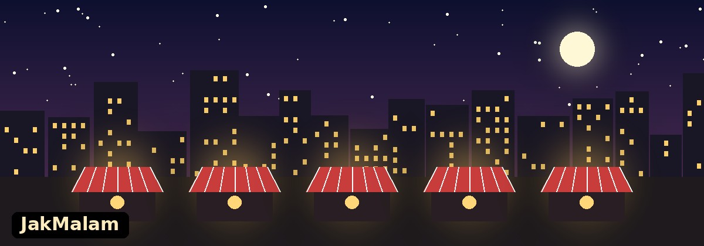

Selamat Datang di JakMalam

JakMalam adalah website sederhana yang mengumpulkan informasi kuliner malam di Jakarta. Banyak orang baru merasa lapar saat pulang kerja atau selesai kegiatan kampus, padahal sebagian besar tempat makan sudah tutup. Lewat website ini, pengunjung bisa tahu area mana saja yang masih ramai pada malam hari.
Yang Bisa Kamu Temukan
Daftar area kuliner
- Informasi area, wilayah, dan jenis makanan yang dicari
- Perkiraan jam ramai tiap area
- Halaman detail berisi menu favorit dan tips berkunjung
- Formulir untuk mengirim rekomendasi tempat baru
Cara memakai website
- Buka halaman Jelajah Kuliner untuk melihat daftar area.
- Pilih area yang menarik, lalu baca penjelasannya di halaman Detail Area.
- Punya tempat favorit yang belum ada? Kirim lewat halaman Kontak.